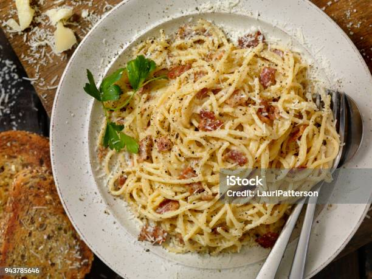

Receita tradicional italiana de espaguete à carbonara
O molho à base de queijo pecorino romano incorpora também guanciale fatiado em tiras finas

O macarrão à carbonara é um dos clássicos italianos. A receita ficou conhecida após se tornar popular entre os soldados norte-americanos na Itália, depois da 2ª Guerra. Com poucos ingredientes, o segredo da receita é saber acertar o ponto da massa e do molho para garantir a cremosidade e suculência que deve ter qualquer o macarrão à carbonara.
Confira a receita abaixo:
Ingredientes
- 100g de espaguete
- 100g de guanciale em tiras finas
- 50 g de queijo pecorino romano
- 3 gemas de ovo
- pimenta do reino moída na hora
- sal a gosto
Modo de preparo
- Em água fervente coloque o macarrão que prefirir e tire quando estiver al dente
- Em uma frigideira fria coloque os pedaços de guanciale e espere dourar
- Em uma tigela separe as gemas e jogue a água do macarrão escorrido lentamente para subirem de temperatura sem coagularem, formando um creme
- Junto as gemas, adiciona o pecorino, pimenta do reino e sal
- Na mesma frigideira do preparo do bacon adicione o macarrão e o creme
- Mexa em fogo baixo até engrossar
- Adicione o bacon no final e sirva em um prato fundo
Bom apetite!!